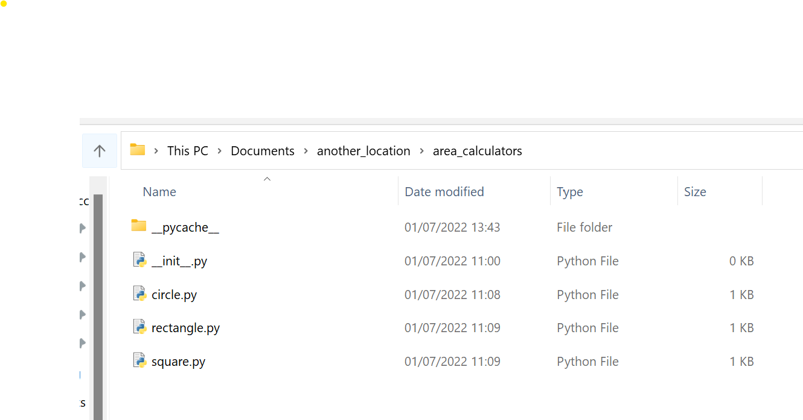
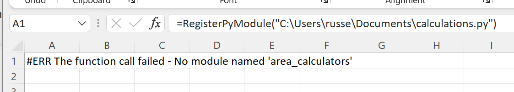
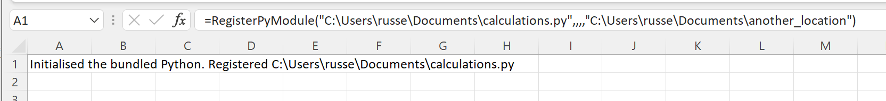
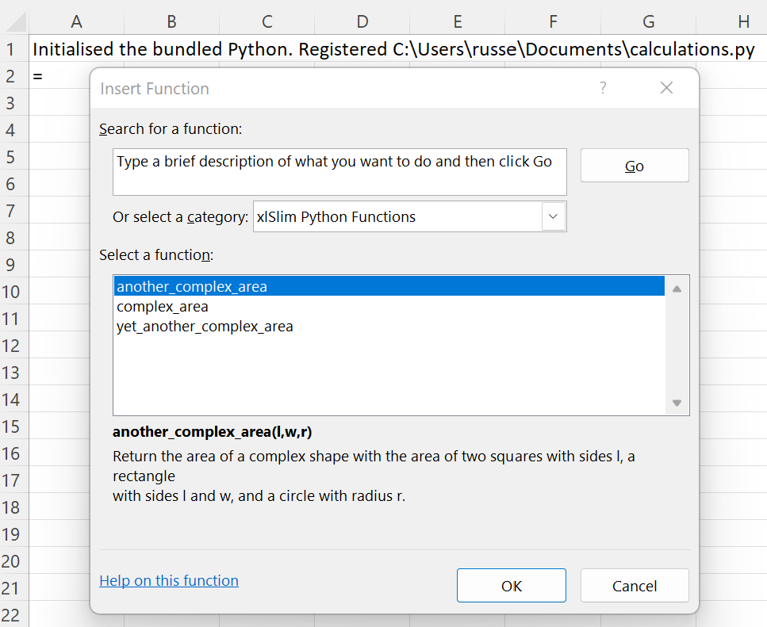
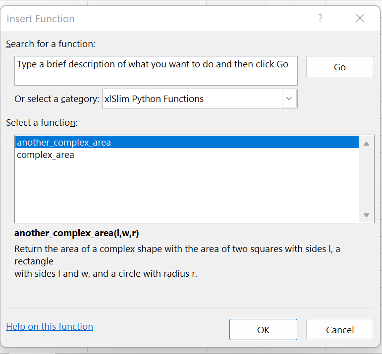
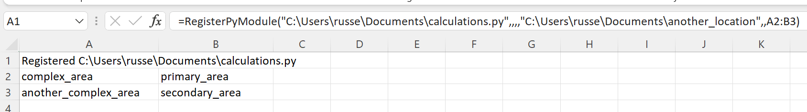
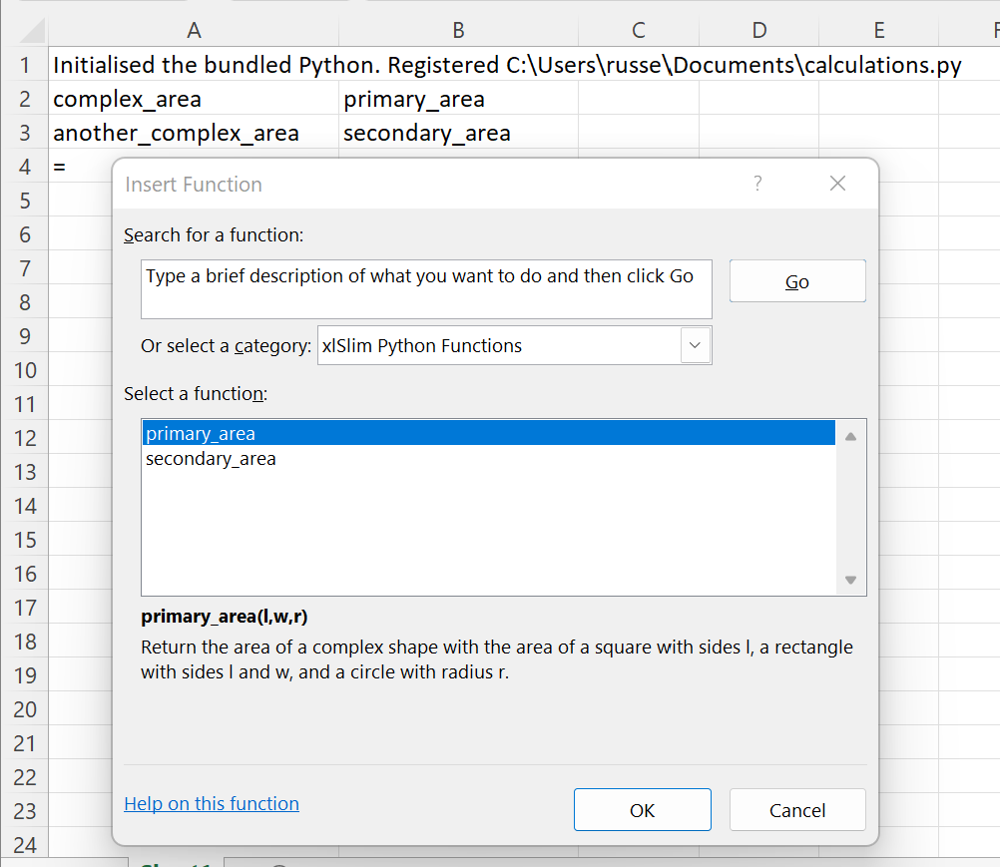

Advanced Module Importing
xlSlim supports importing modules that depend on packages not located in the site-packages folder. Typically these would be packages developed by you, your colleages or other teams within your organisation.
Additionally, xlSlim lets you control which functions are imported from a module and allows you to rename the functions. This is often useful when Python modules are large or have unclear function names.
Let’s assume your colleages have developed a package area_calculators containing various functions to calculate areas.
import math
def area(r: float) -> float:
"""Calculates the area of a circle as πr²"""
return math.pi * r ** 2
def area(l: float, w: float) -> float:
"""Calculates the area of a rectangle as l x w"""
return l * w
def area(l: float) -> float:
"""Calculates the area of a square as l x l"""
return l * l
This package is located in the folder “another_location” that could be on your local PC or a network drive.
You have written Python code in calculations.py that uses the above calculators to determine the area of various complex shapes:
from area_calculators.circle import area as circle_area
from area_calculators.square import area as square_area
from area_calculators.rectangle import area as rectangle_area
def complex_area(l: float, w: float, r: float) -> float:
"""Return the area of a complex shape with the area of a square with sides l, a rectangle
with sides l and w, and a circle with radius r."""
return circle_area(r) + square_area(l) + rectangle_area(l, w)
def another_complex_area(l: float, w: float, r: float) -> float:
"""Return the area of a complex shape with the area of two squares with sides l, a rectangle
with sides l and w, and a circle with radius r."""
return circle_area(r) + 2 * square_area(l) + rectangle_area(l, w)
def yet_another_complex_area(l: float, w: float, r: float) -> float:
"""Return the area of a complex shape with the area of two squares with sides l, two rectangles
with sides l and w, and a circle with radius r."""
return circle_area(r) + 2 * square_area(l) + rectangle_area(l, w)
Note
All the Python code and Excel files shown are available from github in the xlslim-code-samples repo. I highly recommend downloading the samples from github. The Excel workbooks contain many tips and tricks.
Save the Python code as new files on your PC. I saved the files in my Documents folder with the area_calculators package files saved in a “another_location” folder also under my Documents folder.
{kind=link}
Open Excel and enter this RegisterPyModule() formula (amending the location to match where you saved the calculations.py file):
=RegisterPyModule("C:\Users\russe\Documents\calculations.py")
The registration fails as xlSlim doesn’t know where to find the area_calculators package.
{kind=link}
Close and reopen Excel, enter this amended formula:
=RegisterPyModule("C:\Users\russe\Documents\calculations.py",,,,"C:\Users\russe\Documents\another_location")
Now the module registration works as we have told xlSlim where to look for additional Python code. We could have passed a range of additional locations too.
{kind=link}
Filtering and Renaming Functions
Our module has registered but it has added every function to Excel:
{kind=link}
We are really only interested in two functions: complex_area and another_complex_area.
We can restrict the functions imported by passing an Excel range with their names to the RegisterPyModule() call.
{kind=link}
This results in only the selected functions being registered with Excel:
{kind=link}
This is looking good, but we really wanted to have nicer function names in Excel. xlSlim allows you to rename the functions by passing a second column of Excel function names as shown in B2:B3:
{kind=link}
Now we have successfully imported only the two functions we chose and we have given them better names!
{kind=link}
All with no code changes as usual.